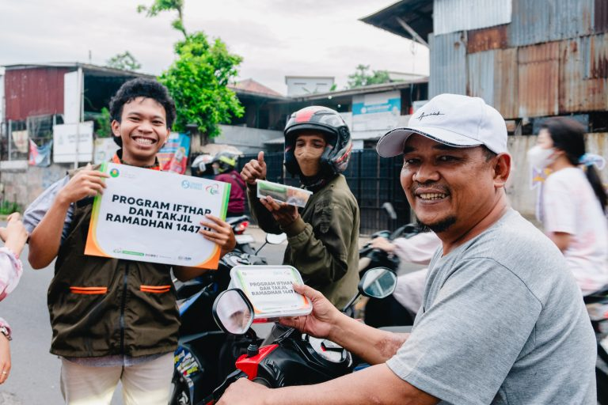

Sosial dan Kemanusiaan
Menghadirkan bantuan dan kepedulian bagi masyarakat yang membutuhkan melalui berbagai kegiatan sosial dan kemanusiaan.
Bersama LAZ Ibadurrahman, mari menebarkan kebaikan melalui zakat, infak, dan sedekah untuk menghadirkan manfaat bagi masyarakat yang membutuhkan.
Jejak Kebaikan
Setiap amanah yang dititipkan menjadi bagian dari upaya menghadirkan manfaat dan perubahan positif bagi masyarakat yang membutuhkan.
Alur Penyaluran Zakat
Setiap zakat, infak, dan sedekah yang Anda titipkan merupakan amanah yang dikelola untuk menghadirkan manfaat bagi masyarakat yang membutuhkan.
Tunaikan zakat, infak, dan sedekah melalui LAZ Ibadurrahman sebagai bentuk kepedulian kepada sesama.
Dana yang diterima dikelola dan disalurkan sesuai ketentuan syariat Islam serta peruntukannya.
Bantuan disalurkan kepada masyarakat yang berhak menerima untuk mendukung kehidupan yang lebih baik.
Bersama menebar kebaikan dan kepedulian.
Cerita Kami
Dari semangat kepedulian hingga berbagai aksi nyata, LAZ Ibadurrahman terus berupaya menghadirkan manfaat bagi masyarakat yang membutuhkan.
01
Berangkat dari semangat kepedulian dan keinginan untuk membantu sesama melalui pengelolaan zakat.
02
Menghadirkan berbagai kegiatan sosial untuk membantu masyarakat yang membutuhkan.
03
Mengembangkan kontribusi melalui bidang pendidikan, kesehatan, dakwah, dan pemberdayaan ekonomi.
04
Terus berupaya memperluas jangkauan bantuan dan meningkatkan kebermanfaatan program.
05
Memperkuat komitmen untuk menjadi lembaga pengelola zakat yang amanah dan profesional.

LAZ Ibadurrahman
Tentang LAZ Ibadurrahman
LAZ Ibadurrahman merupakan lembaga yang bergerak dalam pengelolaan zakat, infak, dan sedekah sebagai bentuk kepedulian terhadap sesama. Melalui pengelolaan dana umat, kami ingin menjadi jembatan kebaikan antara para donatur dan masyarakat yang membutuhkan.
Dengan semangat amanah dan kepedulian, LAZ Ibadurrahman berupaya menghadirkan berbagai program sosial dan kemanusiaan yang memberikan manfaat bagi masyarakat. Kami percaya bahwa setiap kebaikan yang dititipkan memiliki arti besar bagi kehidupan sesama.
Menumbuhkan semangat berbagi dan kepedulian untuk membantu sesama yang membutuhkan.
Menempatkan kepercayaan para donatur sebagai tanggung jawab dalam pengelolaan dana umat.
Mengupayakan penyaluran zakat, infak, dan sedekah agar memberikan manfaat nyata bagi masyarakat.
Tunaikan zakat, infak, dan sedekah melalui LAZ Ibadurrahman. Bersama, kita hadirkan manfaat dan kepedulian bagi sesama.
Menyalurkan amanah, menghadirkan manfaat.
Salurkan Kebaikan
Tunaikan zakat, infak, dan sedekah melalui LAZ Ibadurrahman. Bersama, kita hadirkan manfaat bagi saudara-saudara yang membutuhkan.